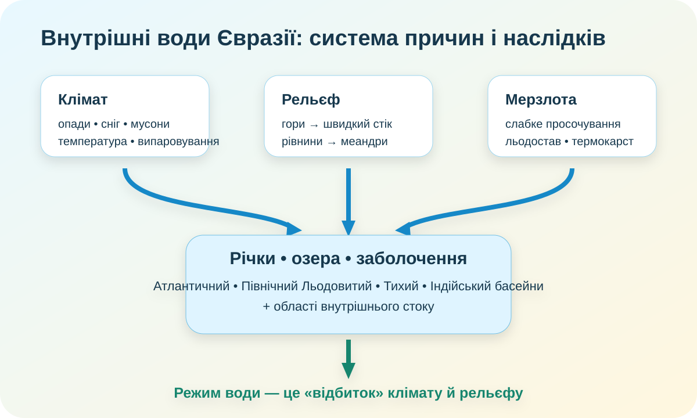

1. Гіпотеза — 3 хв
Чому дві великі річки одного материка можуть мати зовсім різний режим?
2. Материк як система басейнів — 5 хв

Завдання. На карті знайдіть Атлантичний, Північний Льодовитий, Тихий та Індійський океани. Потім назвіть щонайменше дві великі внутрішні області, з яких вода не потрапляє безпосередньо у Світовий океан.
3. Порівняльна діаграма річок — 6 хв
КТП пропонує масштаб 1 см = 500 км. Нижче — цифрова версія цієї вправи. Значення округлені, бо довжина річки залежить від методики вимірювання й того, яку систему приток вважають головною.
Міні-розрахунок. Скільки сантиметрів матиме лінія для Лени довжиною приблизно 4400 км у масштабі 1 см = 500 км?
Висновок: чому довжина сама по собі майже нічого не говорить про сезонний режим річки?
4. Річка як «кліматограф» — 6 хв
🌨️ Лена
Тече з півдня на північ. Верхів’я навесні відтає раніше, ніж низов’я. Це створює ризик льодових заторів і повеней.
🌧️ Ганг–Брахмапутра
Літній максимум опадів і танення льодовиків у горах створюють великий сезонний стік.
🏜️ Амудар’я
Річка бере воду у високих горах, але перетинає дуже сухі області, де втрати на випаровування й водозабір великі.
Доказове питання: який із трьох прикладів найкраще показує, що режим річки визначається не одним, а кількома чинниками одночасно?
5. Супутник бачить те, чого не видно з атласу — 5 хв

NASA Earth Observatory: Байкал із космосу. На знімку добре видно витягнуту форму тектонічної западини та контраст із гірським обрамленням.
Озеро Байкал — не просто «велике озеро»
Байкал — найглибше озеро світу. Його западина пов’язана з рифтовими тектонічними процесами. Це приклад того, як геологічна будова контролює форму й глибину водойми.
NASA: Байкал ↗ NASA Worldview ↗
Методологічна пастка. На супутниковому знімку ми бачимо форму та стан поверхні, але не можемо лише «по картинці» визначити глибину чи походження озера. Для цього потрібні вимірювання й геологічні дані.
Завдання: поясніть, чому Каспійське море, Байкал і Аральське море не можна об’єднати в одну групу лише за ознакою «велика водойма».
6. Мерзлота: коли ґрунт працює як гідрологічний чинник — 4 хв
зима: ґрунт промерзлий
весна: поверхня тане
вода погано просочується вниз
зростає поверхневий стік і заболочення
У північній Євразії багаторічна мерзлота впливає на дренаж, утворення термокарстових озер і сезонний стік. NASA показує, що в дельті Лени навесні швидке танення снігу над мерзлим ґрунтом сприяє паводкам, а танення самої мерзлоти може змінювати кількість і стійкість озер.
NASA: дельта Лени й мерзлота ↗ Copernicus: дельта Лени ↗
7. Коротке відео — 3 хв
Після перегляду запишіть два приклади зв’язку між кліматом і режимом річок.
8. Ваш висновок → теорія — 3 хв
Теорія після дослідження
Євразія має води всіх чотирьох океанічних басейнів і великі області внутрішнього стоку. Це результат величезних розмірів материка, складного рельєфу й різноманітного клімату.
Живлення та режим річок різні. На півночі важливі снігове живлення, льодостав і весняні повені; у мусонній Азії — літній максимум опадів; у високих горах — снігово-льодовикове живлення; у сухих внутрішніх районах — великі втрати води на випаровування й господарське використання.
Озера мають різне походження. Байкал пов’язаний із рифтовою западиною, Каспійське море лежить у замкненій западині, а частина озер півночі пов’язана з льодовиковими й термокарстовими процесами.
Багаторічна мерзлота змінює водопроникність ґрунту та напрям руху води, тому є не «додатковим фактом», а чинником гідрологічного режиму.
9. CER — 4 хв
Твердження: «Різноманітність внутрішніх вод Євразії є закономірним наслідком різноманітності клімату, рельєфу й геологічної будови».
C — Claim
E — Evidence
R — Reasoning
10. Домашня робота
§54 за КТП. Створіть «гідрологічний паспорт» однієї системи на вибір: Лена, Дунай, Янцзи, Ганг–Брахмапутра, Байкал або Каспійське море. Обов’язково: басейн стоку, тип живлення/походження, сезонний режим, один природний ризик, одне джерело доказів.
Електронний підручник ІМЗО ↗ NASA Worldview ↗ Copernicus Browser ↗
11. Тест — 10 балів
Спочатку введіть дані. Інакше тест не відкриється — географія географією, а безіменні результати мають приблизно таку ж наукову цінність, як «десь там була річка».